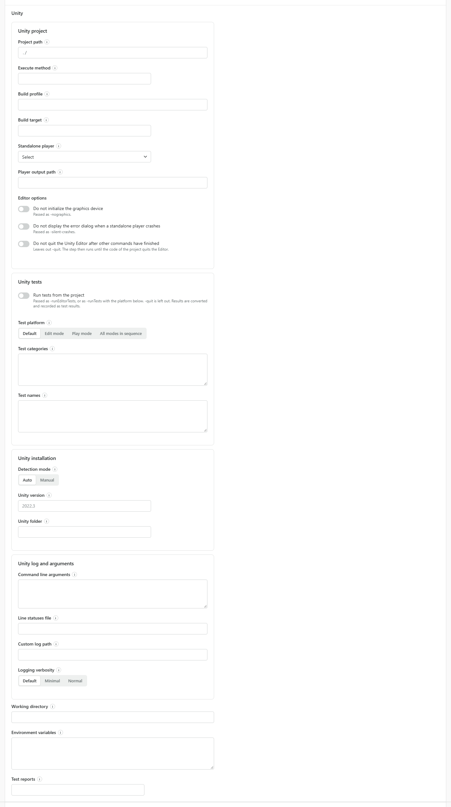
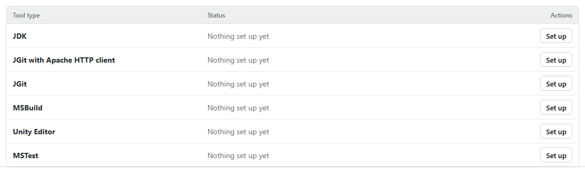
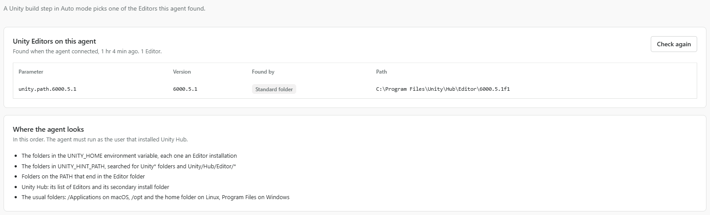

Unity step
Build, test or run a method of a Unity project with the Unity Editor in batch mode, and read the Unity log in clear blocks.
When to use it
Use the Unity step when your game is a Unity project and you want Buildspawn to make a player (a Windows, Linux, Mac, Android or console build), run the project's tests, or run one of your own build methods. The step finds the Unity Editor on the agent for you. Batch mode means the Editor runs without windows, so it works on a build machine.
How to set it up
- Open the build configuration and go to Settings › Build steps.
- Click Add build step, type
Unityin Filter step types and click the Unity tile. - Give the step a name, for example
Build Windows player. - Under Unity project, type the Project path if the project is not at the top of the workspace.
- Say what to run: an Execute method (your own build method), a Standalone player with a Player output path, a Build profile, or Run tests from the project.
- Under Unity installation, leave Detection mode on Auto and type the Unity version, or choose Manual and name the folder.
- Click Save.

The settings every step has (step name, working directory, environment variables, when the step runs, and so on) are the same for all steps. They are explained on Runners.
Every field
Unity project
| Field | What it does | Default | Example |
|---|---|---|---|
| Project path | The Unity project folder, relative to the working directory. Passed to Unity as -projectPath. | Empty: the working directory | Mobile |
| Execute method | A static method to run once the project is loaded. Passed as -executeMethod. The class must be in an Editor folder. The box suggests the static methods found in Assets/Editor of the last workspace. | Empty | BuildScript.BuildWindows |
| Build profile | The project path of a Unity Build Profile asset. Passed as -activeBuildProfile, and used instead of Build target. Needs Unity 6 (6000.x) or later. The path must end in .asset. Before the build, a first quiet run loads the project with the profile. | Empty | Assets/Settings/Build Profiles/Android-Release.asset |
| Build target | The active build target before the project loads. Passed as -buildTarget. Not used when a build profile is set. The box suggests the names Unity knows: Android, EmbeddedLinux, GameCoreXboxOne, GameCoreXboxSeries, iOS, Linux64, LinuxHeadlessSimulation, OSXUniversal, PS4, PS5, QNX, Standalone, StandaloneLinux64, StandaloneOSX, StandaloneWindows, StandaloneWindows64, Switch, tvOS, WebGL, WindowsStoreApps and XboxOne. | Empty | StandaloneWindows64 |
| Standalone player | Builds a player with the matching switch, for example -buildWindows64Player. Choices: Linux 32-bit, Linux 64-bit, Linux 32-bit and 64-bit, Mac OSX 32-bit, Mac OSX 64-bit, Mac OSX 32-bit and 64-bit, Windows 32-bit, Windows 64-bit. Needs a Player output path. | Select (none) | Windows 64-bit |
| Player output path | Where the player is written. A relative path starts at the working directory. With a build profile, it is passed to -build. | Empty | Builds/Win64/Skyforge.exe |
| Editor options | Three switches. Do not initialize the graphics device passes -nographics. Do not display the error dialog when a standalone player crashes passes -silent-crashes. Do not quit the Unity Editor after other commands have finished leaves out -quit, so the step runs until your project's code quits the Editor. | All off | First one on |
Unity tests
| Field | What it does | Default | Example |
|---|---|---|---|
| Run tests from the project | Runs the Unity Test Framework. Passed as -runEditorTests, or as -runTests with the platform below. -quit is left out. The results are converted and recorded as test results of the build. | Off | On |
| Test platform | Default runs the Editor tests. Edit mode and Play mode run that mode. All modes in sequence runs Edit mode and then Play mode as two Unity runs. | Default | Play mode |
| Test categories | One category per line, or separated by commas or semicolons. Passed as -editorTestsCategories. | Empty | Smoke |
| Test names | One test name per line, or separated by commas or semicolons. Passed as -editorTestsFilter. | Empty | Skyforge.Tests.SaveGame |
Unity installation
| Field | What it does | Default | Example |
|---|---|---|---|
| Detection mode | Auto picks an Editor the agent found (see the agent's Unity tab below). Manual uses the folder or the tool you name. | Auto, or Manual when a folder is set | Auto |
| Unity version | Auto mode. The version the step needs. A short version takes the highest installed one that starts with it, so 2022.3 matches 2022.3.10f1. Empty takes the version in ProjectSettings/ProjectVersion.txt if it is installed, and otherwise the latest one on the agent. The step only runs on agents that have a matching Editor. | Empty | 6000.0 |
| Unity Editor tool | Manual mode. A Unity Editor from Settings › Tools (see below). It takes the place of the folder. Shown only when at least one Editor tool exists. | None | Unity 2022.3.10 |
| Unity folder | Manual mode. The folder that holds the Editor. | Empty | C:\Program Files\Unity\Hub\Editor\2022.3.10f1 |
Unity log and arguments
| Field | What it does | Default | Example |
|---|---|---|---|
| Command line arguments | One argument per line, added after the ones above. A -logFile or -cleanedLogFile here replaces the log setting of the step. Other processes on the agent can see arguments, so pass a secret through the environment. | Empty | -define:CI_BUILD |
| Line statuses file | An XML file in the working directory that sets the status of log lines and replaces the default rules. The root is lines. Each line has a level (warning, error or normal) and a message, a regular expression searched in the log line. | Empty | ci/unity-lines.xml |
| Custom log path | A file for the Unity log. It is emptied first and read while Unity runs. Empty logs to the console where Unity can, and to a temporary file otherwise. | Empty | Logs/unity-build.log |
| Logging verbosity | Normal passes -logFile. Minimal passes -cleanedLogFile, which leaves out stack traces of messages. | Default (normal) | Minimal |
Example of a line statuses file:
<lines>
<line level="warning" message="Shader .* is not supported"/>
<line level="error" message="Build failed: .*"/>
</lines>The Unity Editor tool
If agents do not have Unity in a standard place, add the Editor as a tool. Open Settings › Tools, find Unity Editor, click Add and give it a name. Set its home to the Unity folder (it holds Editor/Unity.exe, Editor/Unity or Unity.app). It can also be installed from a zip on each agent. In the step, set Detection mode to Manual and choose the tool in Unity Editor tool.

The agent's Unity tab
Open Agents, open an agent and click Unity. It lists the Editors the agent found when it connected: a parameter name such as unity.path.6000.5.1, the Version, Found by and Path. Click Check again after you install a new Editor. The agent looks in this order:
- The folders in the
UNITY_HOMEenvironment variable, each one an Editor installation. - The folders in
UNITY_HINT_PATH, searched forUnity*folders andUnity/Hub/Editor/*. - Folders on the
PATHthat end in the Editor folder. - Unity Hub: its list of Editors and its secondary install folder.
- The usual folders:
/Applicationson macOS,/optand the home folder on Linux, Program Files on Windows.
The agent must run as the user that installed Unity Hub. If it runs as another user, it does not see the Hub's list. Set UNITY_HOME or UNITY_HINT_PATH in that case.
When Unity version is set in Auto mode, the build waits for an agent whose Unity tab lists a matching Editor. The queue shows the reason.

A worked example
Skyforge is a Unity game. Its build script Assets/Editor/BuildScript.cs has a method BuildWindows that calls BuildPipeline.BuildPlayer. The studio's Windows agents have Unity 6000.0 from Unity Hub.
| Field | Value |
|---|---|
| Step name | Build Windows player |
| Project path | Mobile |
| Execute method | BuildScript.BuildWindows |
| Build target | StandaloneWindows64 |
| Do not initialize the graphics device | On |
| Detection mode / Unity version | Auto / 6000.0 |
| Logging verbosity | Minimal |
Add a step before it with Run tests from the project on and Test platform set to Edit mode, so a failing test stops the build early.
What you see when it runs
- The log starts with a line such as Unity 6000.0.23f1 found at C:\Program Files\Unity\Hub\Editor\6000.0.23f1.
- The Unity log is split into named blocks you can fold: Command line arguments, Package Manager, Script compilation, Refresh, Update, Lightmap, Prepare Build, Build Report, Player statistics and more.
- Compiler warnings (
warning CS...) are marked as warnings. Compiler errors (error CS...), Scripts have compiler errors, Fatal Error!, an exception in the execute method, and Error building player are marked as errors. - If Unity ends with exit code 0 but the log had error lines, the step fails with Unity reported N build problems. The lines are marked in the log above.
- With tests on, the results appear as test results of the build.
- With a build profile, you first see Pre-warming the project for build profile .... That first run may end with an error. This is expected and ignored.
- If the project uses asset pipeline version 2, the log says the Unity Accelerator arguments are used. See Unity build settings for the cache server.
Problems and fixes
| Problem | What to do |
|---|---|
| The build waits in the queue. | No online agent has a matching Editor. Open the agent's Unity tab and click Check again, or change Unity version. |
| The Unity Editor could not be started on this agent. | Install Unity on the agent, or use Manual detection mode and name the folder. |
| Manual detection mode needs the folder of the Unity Editor. | Fill in Unity folder, or choose a Unity Editor tool. |
| ... is not a Unity version. | Use a version such as 2022.3 or 2021.3.16. |
| The Build Profile path should point to a .asset file. | Give the whole path of the asset, ending in .asset. Build profiles need Unity 6. |
| Unity says it has no license. | Add the Unity build settings build feature with your serial or license file. |
| Unity wrote no test results. | The Editor stopped before the tests ran. Read the log above the message. Check the test platform and that the project has a test assembly. |
| The step stays running after the build finished. | Check that Do not quit the Unity Editor... is off, or that your method calls EditorApplication.Exit. |